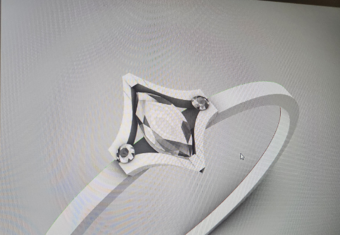
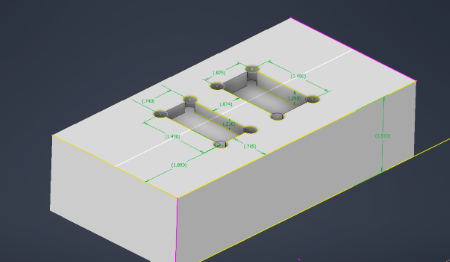
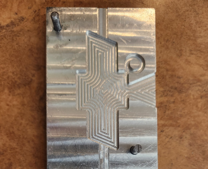

Custom design
Custom Jewelry
Designed and made intricate custom jewelry, including rings and pendants. For the pictured ring, I developed the shape and stone setting as a CAD model.
Selected work
Examples of custom design and manufacturing work, from jewelry design to CNC workholding and injection-mold tooling.

Designed and made intricate custom jewelry, including rings and pendants. For the pictured ring, I developed the shape and stone setting as a CAD model.

Designed a custom fixture in CAD to locate and hold parts consistently during repeated CNC operations. The dimensioned layout supports a repeatable machining setup.

Machined a custom injection mold by cutting the cavity and surrounding channels into a metal block. The photo shows the finished machined mold surface.